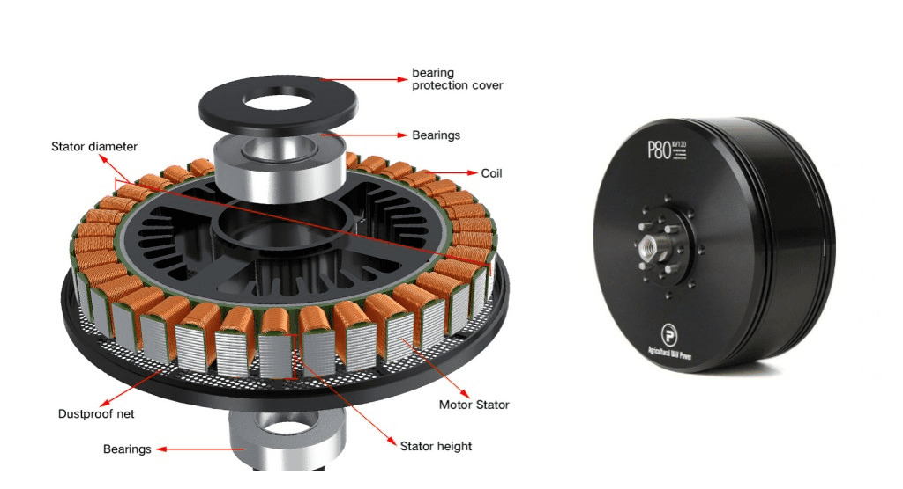

What is a Drone Motor?
Drone motors are usually brushless DC (BLDC) motors that convert electrical
energy from the battery into mechanical rotation to spin the propellers
and generate thrust.
How the Motor Works
The flight controller sends speed commands to the ESC. The ESC then
supplies controlled power to the motor windings, creating a rotating
magnetic field. This rotates the motor shaft and spins the propeller.
Key Parameters
- KV Rating: RPM per volt applied
- Stator size: Indicates motor power capability
- Max current: Maximum safe current draw
- Weight: Affects drone payload capacity
Understanding KV Rating
- High KV (2000–3000 KV):
- Higher speed
- Smaller propellers
- Used in racing drones
- Medium KV (900–1500 KV):
- Balanced performance
- General-purpose drones
- Low KV (400–900 KV):
- Higher torque
- Larger propellers
- Mapping and heavy-lift drones
Typical Use Cases
- High KV motors for racing drones
- Medium KV for camera drones
- Low KV for mapping or delivery drones
Selection Tips
- Match motor KV with propeller size
- Ensure motor thrust is at least 2× drone weight
- Check compatibility with ESC and battery voltage
Common Mistakes
- Using high KV motors with large propellers
- Ignoring thrust-to-weight ratio
- Choosing motors that draw more current than ESC can handle